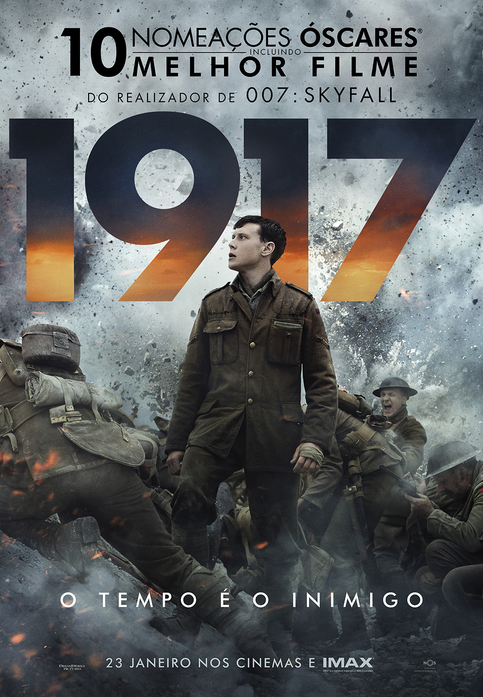

1917

Synopsis: In 1917, Corporals Schofield (George MacKay) and Blake (Dean-Charles Chapman) are young British soldiers during World War I. When they are tasked with a seemingly impossible mission, the two must cross enemy territory, fighting against time, to deliver a message that could save around 1600 fellow battalions.
Runtime: 119 minutes
Direction: Sam Mendes
Cast: George MacKay, Dean-Charles Chapman, Mark Strong
Genre: War, Action